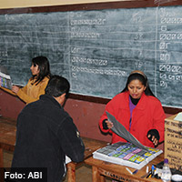

“Un ciudadano, un voto” es un principio del sistema de la democracia representativa, pero un principio que no se cumple en Bolivia. La politóloga Natalia PeresMartinsconsidera que esto no va a cambiar con una reasignación de escaños parlamentarios sobre los nuevos datos poblacionales del censo 2012, tomando en cuenta las fórmulas de asignación de escaños para diputados uninominales y plurinominales que por determinados criterios no cumplen con la proporcionalidad perfecta.
Los investigadores Natalia Peres y Álvaro Chirino, ambos de la Fundación ARU, estudiaron los “Cambios en la población y desigualdad en el voto. Bolivia, elecciones generales 2002, 2005, 2009”, tomando en cuenta que “si bien el sistema democrático no se reduce en absoluto al voto,éste es el elemento más importante de la democracia representativa”.
Una vez conocidoslos nuevos datos poblacionales del Censo 2012, el sector político en el país comenzó a hablar de la reasignación de escaños parlamentarios en función de las elecciones de 2014. Uno de los hallazgos del estudio de Peres muestra que “en las tres últimas elecciones generales ha habido desigualdad en el voto: el voto de los ciudadanos de algunos departamentos vale más (o menos) que en otros”.
Otro de los resultados del estudio muestra que los departamentos sobre y sub representados son siempre los mismos; y la desproporcionalidad en la asignación de escaños es más acentuada en los diputados uninominales.
No se cumple “un ciudadano, un voto”
En el estudio se plantea que, comparativamente, la desproporcionalidad es común en los sistemas electorales, ¿perohasta qué grado de desproporcionalidad se puede soportar sin que la democracia se vea afectada? Bolivia está, por ejemplo, en el puesto 8, de un total de 78 países con mayor desproporcionalidad del voto en la cámara baja.
En la estimación realizada por los investigadores persiste un malapportionment, es decir una discrepancia entre la cantidad de escaños y la cantidad de población dentro de una unidad geográfica, en los diputados plurinominales, lo que significa “una representación desigual o no proporcional; El malapportionment es mayor en diputados uninominales (0.1646), mientras que para los plurinonimales es de 0.1014. En este caso 0 (cero) es una proporcionalidad perfecta y 1 es total desproporcionalidad, “lo que se puede entender como que el voto de un solo ciudadano pesa más que de el de los restantes”.
El otro hallazgo muestra que el voto de un ciudadano en Beni, Chuquisaca, Oruro, Pando, Potosí y Tarija tiene más peso que en La Paz, Cochabamba y Santa Cruz.
Según datos de geografía electoral de la entonces Corte Nacional Electoral para el año 2006, Pando tiene solo tres circunscripciones uninominales, mientras que Santa Cruz tiene 13. La circunscripción más poblada de Pando tiene 14.755 habitantes, mientras que la circunscripción cruceña más poblada está en 96.504 habitantes y la menos poblada con 41.683. La desproporción, para el caso de la Cámara Baja, está en que una sola circunscripción tiene ocho o nueve veces más población pero vale igual que una pequeña (merece un parlamentario).
En otro acápite del estudio, sobre la base del cálculo del coeficiente de representación, para 2009 se detectó que el voto en Santa Cruz tuvo un valor de 0.78 y en Pando estaba sobrerepresentado con 6.06. “Esto quiere decir que el voto de un pandino valdría seis veces más que de un cruceño”.
“Lo ideal en una democracia representativa es que un voto valga un voto –dice la politóloga Natalia Peres, pero según nuestro cálculo de coeficiente de representación, con los resultados oficiales del Censo 2012, tomando en cuenta la Cámara Baja y los diputados plurinominales, el voto en La Paz valdría 0,85, el voto en Santa Cruz valdría 0,81, en Cochabamba valdría 0,91. Esos son los departamentos sub-representados. El voto en Chuquisaca vale 1,2, está sobre representado y en Pando valdría 3,47. Esto para las elecciones 2014”. Para el trabajo se tomó en cuenta el total de la población, como establece la legislación electoral.
El trabajo de Peres y Chirino contiene un análisis pormenorizado de las reglas electorales entre 1997 a 2009, una descripción metodológica detallada de la medición de la desproporción, mapas y otros elementos. El estudio se realizó en el marco del grupo de Economía Política de Fundación ARU. La politóloga Natalia PeresMartins puede ser contactada en el correo nperes@aru.org.bo